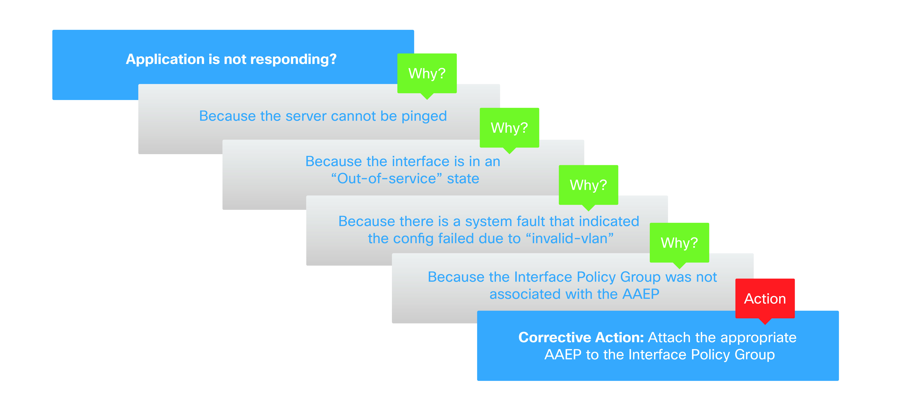

Troubleshooting Methodology¶
Overall Methodology¶
Troubleshooting is the systematic process used to identify the cause of a problem. The problem to be addressed is determined by the difference between how some entity (function, process, feature, etc.) should be working versus how it is working. Once the cause is identified, the appropriate actions can be taken to either correct the issue or mitigate the effects: the latter is sometimes referred to as a workaround.
Initial efforts in the process focus around understanding more completely the issue that is occurring. Effective troubleshooting should be based on an evidence-driven method, rather than a symptomatic level exploration. This can be done by asking the question:
The intent of this question is to move towards an observed factual evidence-driven method where the evidence is generally taken from the system where the problem is observed.
Troubleshooting is an iterative process attempting to isolate an issue to the point that some action can be taken to have a positive effect. Often this is a multi-step process which moves toward isolating the issue. For example, in deploying an application on a server attached to an ACI fabric, a possible problem observed could be that the application does not seem to respond from a client on the network. The isolation steps may look something like this:
{kind=link}
Troubleshooting is usually not a simple linear path, and in this example it is possible that a troubleshooter may have observed the system fault earlier in the process and started at that stage.
In this example, information related to the problem came from several data points in the system. These data points can be part of a linear causal process or can be used to better understand the scope and various points and conditions that better define the issue. How these data points are collected is defined by three characteristics:
- WHAT: What information is being collected
- WHERE: Where on the system is the information being collected
- HOW: The method used in collecting the information
For example, the state of the fabric Ethernet interface can be gathered from the leaf through CLI on the leaf in a couple of different ways. This information can be gathered from the APIC, either through the GUI or the REST API call. When troubleshooting, it is important to understand where else relevant information is likely to come from to build a better picture of what is the issue.